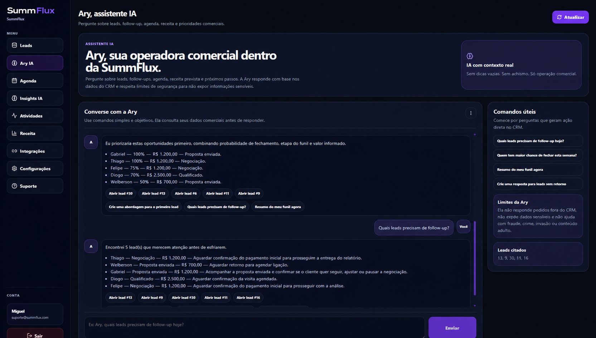

IA para operações comerciais
A IA que lê a conversa, preenche o lead e economiza horas do seu time.
A SummFlux usa a Ary AI para entender conversas comerciais, preencher nome, produto, valor, objeções e próxima ação automaticamente e mandar o lead para o CRM da SummFlux ou para a integração que sua operação já usa.
1 clique
a Ary interpreta a conversa e preenche o operacional por você
Menos retrabalho
o time para de copiar conversa, resumir manualmente e atualizar CRM na mão
Multi-canal
WhatsApp Web para todos, Gmail nos planos mais fortes e CRM configurável por empresa

*As imagens da landing usam dados ilustrativos.
Clique ou toque na imagem para ampliar
Feito para empresas que querem ganhar tempo, reduzir trabalho manual e transformar conversa comercial em operação organizada com IA.
O que a IA encontra
Menos conversa perdida. Mais oportunidade visível.
A cada análise, a SummFlux transforma mensagens soltas em contexto comercial: quem é o cliente, o que ele quer, quanto pode valer, qual objeção apareceu e o que sua equipe deve fazer agora.
Produto
O que muda na rotina comercial.
O vendedor não precisa mais reler conversa inteira nem preencher CRM campo por campo. O gestor ganha contexto mais confiável e a operação roda com menos retrabalho.
Resumo em segundos
Entenda o que foi discutido sem reler dezenas de mensagens, áudios ou threads inteiras.
Próximo passo claro
Saiba se é hora de mandar proposta, cobrar retorno, marcar agenda ou destravar a negociação sem adivinhar.
Objeções visíveis
Preço, prazo, dúvida e insegurança deixam de ficar escondidos no meio da conversa.
Receita acompanhável
Veja o que está aberto, ganho, perdido ou em risco antes que o comercial perca timing.
Pipeline sem planilha
Cada lead fica com status, origem, valor, probabilidade e histórico em um só lugar.
Equipe sob controle
Usuários, permissões, consumo e histórico ajudam a empresa a crescer sem perder governança.
Ary AI
Priorização comercial
Mostra quais leads merecem atenção agora com base em etapa, valor, probabilidade, objeções e timing.
Ajuda prática para o time
Cria respostas, organiza follow-up e responde perguntas sobre a operação sem tirar o vendedor do fluxo.
Mais valor conforme a operação cresce
Quando sua empresa adiciona Gmail, mais usuários e integrações, a Ary vira uma alavanca ainda maior de produtividade.
A IA que ajuda o comercial a agir, não só a resumir.
A Ary cruza o contexto da conversa com o histórico do CRM para responder perguntas, sugerir abordagens, apontar prioridades e apoiar o time nas decisões que destravam receita.
A Ary ajuda a equipe a entender prioridades, follow-ups e próximas ações sem sair da operação.
CRM em funcionamento
O painel mostra onde agir primeiro.
A central de oportunidades separa leads parados, propostas pendentes, objeções fortes e chances reais de recuperação para sua equipe não depender de memória.
Priorize
Veja quem precisa de resposta antes de esfriar.
Veja quem precisa de resposta antes de esfriar.
Entenda
Abra o lead com resumo, objeções e próxima ação.
Abra o lead com resumo, objeções e próxima ação.
Acompanhe
Controle valor, status, histórico e receita prevista.
Controle valor, status, histórico e receita prevista.


Clique ou toque na imagem para ampliar
Como funciona
1
2
3
Da conversa ao CRM em três passos.
A SummFlux entra no fluxo que a equipe já usa: o vendedor abre o WhatsApp Web ou Gmail, a Ary entende o contexto e o lead vai para o destino comercial configurado.
Abra o canal
O vendedor entra no WhatsApp Web ou Gmail e escolhe a conversa que quer transformar em oportunidade.
A Ary analisa
Com um clique, a IA identifica produto, valor, intenção de compra, objeções e próxima ação recomendada.
O lead segue para o lugar certo
Depois da confirmação, tudo fica salvo no CRM da SummFlux ou na integração externa escolhida pela empresa.
Segurança e privacidade
As conversas continuam dentro da sua operação.
A IA analisa apenas a conversa acionada por um usuário autorizado. As informações ficam vinculadas à empresa contratante e aparecem somente para quem tem permissão no CRM.
Acesso por empresa
Um cliente da SummFlux não vê mensagens, análises ou leads de outra empresa.
IA para apoiar a venda
A Ary resume e sugere. A decisão comercial continua com o vendedor e com o gestor.
Histórico organizado
O gestor acompanha o que aconteceu com cada lead sem depender de prints, planilhas, áudios soltos ou memória do time.
Planos
Mais indicado
Escolha quanta automação comercial sua operação precisa hoje.
Os planos evoluem por canal, capacidade de análise, integração com CRM externo e apoio operacional da Ary. Assim, o upgrade faz sentido quando sua empresa quer economizar mais tempo e operar com mais contexto.
Starter
Para empresas que querem sair da conversa solta, automatizar o preenchimento dos leads e ganhar processo sem aumentar o trabalho da equipe.
R$ 49,90/mês
- Até 300 análises por mês
- 1 usuário
- Análise de conversas no WhatsApp Web
- Preenchimento automático do lead com Ary AI
- CRM completo da SummFlux
- Resumo, objeções e próxima ação por IA
- Pipeline, agenda comercial e histórico dos leads
- Insights básicos da operação
- Organização inicial de follow-ups e tarefas
Ideal para operações enxutas que querem parar de perder tempo com atualização manual e começar a operar com mais padrão.
Contratar StarterPro
Para equipes que já têm volume, precisam operar em WhatsApp e Gmail e querem encaixar a IA da SummFlux no CRM que a empresa já usa hoje.
R$ 149,90/mês
- Tudo do plano Starter
- Até 1.150 análises por mês
- Até 10 usuários
- Análise de conversas no Gmail
- Integração com CRM via webhook
- Destino configurável: SummFlux CRM ou CRM externo
- Central de oportunidades e follow-up inteligente
- Ary AI para priorização e apoio operacional
- Mais contexto compartilhado para vendedores e gestores
Ideal para empresas que querem economizar mais horas por semana e conectar a IA ao processo real sem trocar toda a operação de uma vez.
Contratar ProBusiness
Para empresas que precisam escalar a operação comercial com mais pessoas, mais contexto e mais automação sem perder controle.
R$ 299,90/mês
- Tudo do plano Pro
- Até 5.000 análises por mês
- Usuários ilimitados
- Operação multi-canal com WhatsApp, Gmail e integrações
- Mais capacidade para distribuir times e processos
- Priorização mais forte de oportunidades e follow-ups
- Controle completo da operação e do consumo
- Suporte prioritário
- Acesso antecipado a novas funcionalidades
- Estrutura pronta para crescer sem perder previsibilidade
Ideal para operações com múltiplos vendedores, maior pressão por performance e necessidade real de produtividade em escala.
Contratar Business
FAQ
Dúvidas antes de colocar na operação.
Respostas diretas sobre instalação, canais, privacidade e funcionamento comercial da plataforma.
A SummFlux usa IA para transformar conversa comercial em ação operacional: ela entende o contexto, preenche o lead automaticamente, sugere o próximo passo e envia tudo para o CRM da SummFlux ou para um CRM externo integrado.
Hoje a operação começa com WhatsApp Web em todos os planos. O Gmail fica liberado nos planos Pro e Business. A estrutura também está preparada para novas entradas e integrações futuras.
Não. O cliente pode operar no CRM da SummFlux ou, nos planos Pro e Business, mandar o lead analisado para um CRM externo usando a integração configurada.
Não. A análise acontece quando um usuário autorizado escolhe a conversa ou thread e pede para a Ary analisar aquele contexto.
As informações ficam dentro da conta da empresa contratante e só aparecem para usuários com acesso autorizado ao CRM.
O upgrade faz sentido quando sua empresa precisa de Gmail, mais usuários, integrações com CRM externo, mais capacidade de análise ou mais apoio operacional da Ary em escala.
Quer ver a SummFlux funcionando na sua operação?
Envie seus dados e receba um contato para entender qual plano faz sentido para o volume de conversas, canais e integrações da sua empresa.